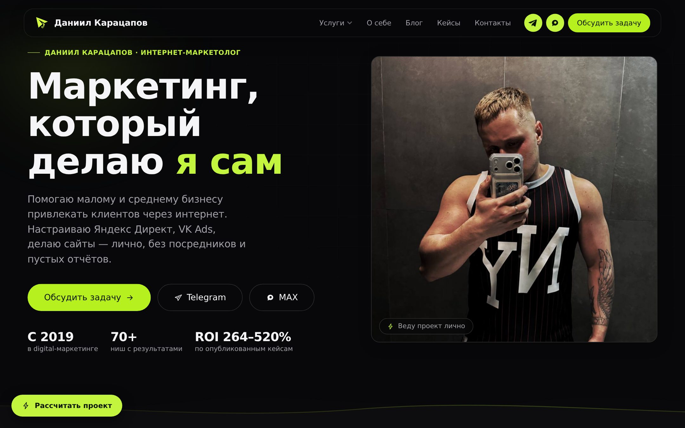
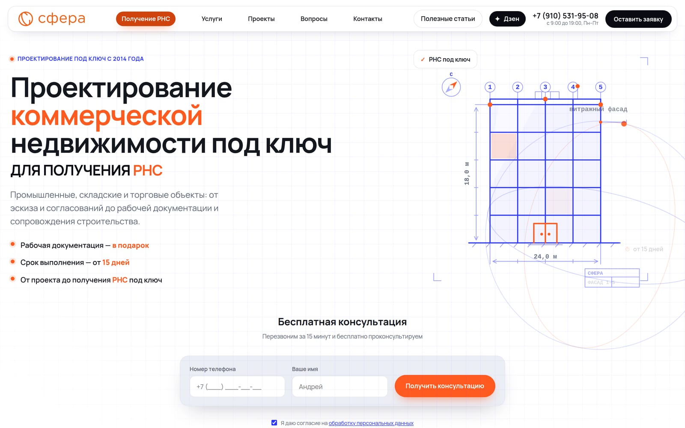
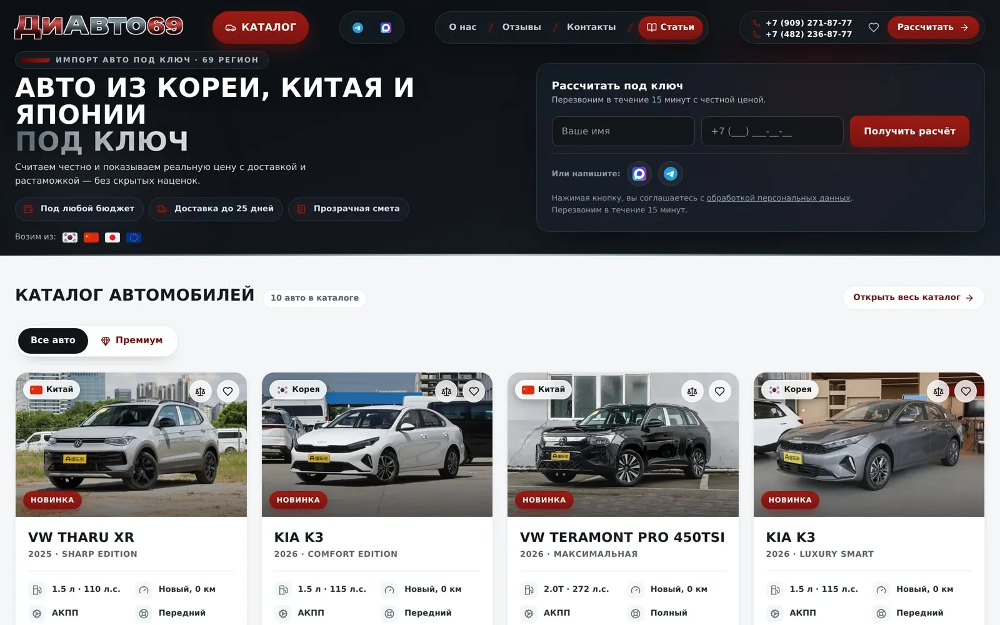

Разработка сайтов · под ключ
Разработка сайтов и лендингов под ключ
Разрабатываю продающие лендинги и корпоративные сайты с нуля: от прототипа и дизайна — до запуска и подключения рекламы. Работаю лично, без агентств и субподрядчиков.
Что входит в разработку сайта под ключ
Берусь за проект с нуля — и передаю вам готовый инструмент продаж, а не просто красивую картинку.
Бриф и анализ конкурентов
Изучаю задачу, целевую аудиторию и конкурентов. Определяем УТП, структуру и офферы, которые реально конвертируют.
Прототипирование и структура
Создаю wireframe: расставляю блоки по логике пути пользователя — от первого касания до заявки. Согласовываем до дизайна.
Дизайн и верстка
Адаптивный дизайн под все устройства. Верстаю на чистом HTML/CSS/JS — никаких тормозящих конструкторов. Оптимизирую скорость загрузки.
Интеграции: CRM, аналитика, формы
Подключаю Яндекс Метрику, цели, форму заявки с уведомлением в Telegram, при необходимости — CRM и коллтрекинг.
SEO-базис и запуск
Заполняю мета-теги, добавляю структурированные данные, настраиваю robots.txt и sitemap. Размещаю на хостинге и подключаю домен.
Портфолио: сайты, которые уже работают
Не шаблоны и не концепты — сайты, которые уже работают и приводят клиентов.

Лендинг · личный бренд
Сайт-портфолио маркетолога
Личный сайт-лендинг интернет-маркетолога с полным портфолио кейсов, квиз-воронкой для квалификации лидов, калькулятором бюджета и автоматической отправкой заявок в Telegram.
Задача и реализация
- Разработка SPA-лендинга на React JSX с компиляцией через Babel и Terser — без тяжёлых сборщиков
- Система вариантов отображения секций через TweaksPanel (3 варианта Hero, 3 варианта Services)
- Квиз-воронка для квалификации лидов с многошаговой формой и отправкой в Telegram Bot API
- Анимированный прелоадер с разлётом частиц, typewriter-эффект для цитат
- 22 развёртываемых кейса с фильтрацией по нишам и услугам
- Адаптивная вёрстка, SVG-волны между секциями, CSS-переменные для тем оформления
- 6 подстраниц-сервисов, страница контактов с картой Тверь–Москва
Технические детали
- Сборка через кастомный build.mjs — JSX → минифицированный JS без webpack/vite
- Content.json для редактирования контента без пересборки
- Telegram Bot API вместо серверной части — нулевые расходы на бэкенд
- IntersectionObserver для reveal-анимаций и ленивой загрузки
- CSS-архитектура на custom properties — смена акцентной темы без JS
- Яндекс Метрика с веб-виизором и коллбэком событий форм

Корпоративный сайт · B2B · строительство
Сайт проектного бюро «Сфера»: 38 посадочных страниц под B2B-запросы
Инженерно-проектное бюро: проектирование коммерческой недвижимости и разрешения на строительство по Москве, Московской и Тверской областям. Ниша с длинным циклом сделки — клиент месяцами сам изучает процедуру до обращения. Построил структуру, которая ловит спрос на всех стадиях: от «что такое ГПЗУ» до «разрешение на строительство склада в Люберцах».
Структура под поисковый спрос
- 6 страниц по направлениям проектирования: магазин, склад, производство, автосервис, административное здание, отель
- 6 страниц по получению разрешения — тот же набор типов, но под другой интент: документы, причины отказов, сроки
- 7 гео-страниц: Истра, Клин, Егорьевск, Колюбакино, Люберцы, Кашин, Солнечногорск — на каждой реальный объект компании
- 12 экспертных статей: ГПЗУ, инженерные изыскания, экспертиза документации, техусловия, легализация самостроя
- «Проектирование склада» и «разрешение на строительство склада» — разные страницы с перелинковкой, а не дубли под похожие ключи
- Лид-магнит: PDF-гид с чек-листом из 18 пунктов за подписку
Техника и аналитика
- 12 типов микроразметки Schema.org: FAQPage на 33 страницах, хлебные крошки на 37
- Уникальные title и description на всех страницах — ноль дублей
- IndexNow: мгновенное уведомление Яндекса и Bing вместо ожидания робота
- Статическая генерация на Next.js — главная весит 92 КБ, изображения в WebP
- Метрика с вебвизором, коллтрекинг Callibri, квиз-калькулятор в 3 шага, карта объектов
- Автодеплой: правка в репозитории — сборка — выкладка, без ручной загрузки

Сайт + Telegram-бот · импорт автомобилей
Витрина на 133 авто, которая наполняется сама из Telegram-канала
Компания возит машины из Кореи, Китая и Японии под ключ. Менеджер публикует авто в Telegram-канал — и оно само появляется на сайте, в мини-приложении и в товарном фиде Яндекса. Каталога никто не ведёт руками, поэтому витрина не врёт.
Сайт и Telegram
- Каталог с 11 фильтрами, сравнение, избранное и подбор по бюджету за 5 вопросов
- Отдельная витрина «Премиум» — Mercedes-Benz, BMW и Audi от 5 млн ₽
- Мини-приложение в Telegram: тот же каталог без перехода на сайт
- Подписка на новинки: бот сам напишет, когда появится подходящее авто
- Панель управления: заявки, статистика, рассылка, 8 прав доступа
Автоматизация и реклама
- Пост в канале разбирается на 11 характеристик и становится карточкой авто
- Спорные посты уходят в черновики, а не в витрину
- Два товарных фида: Директу — до 10 фото, Бизнесу — обрезка по границе предложения
- 7 целей Метрики, включая глубину просмотра каталога по уникальным авто
- Заявки хранятся в России по 152-ФЗ, уведомление дублируется в два адреса
Этапы разработки сайта
Сколько стоит разработка сайта
- Прототип и структура
- Адаптивный дизайн и верстка
- Форма заявки + уведомления в Telegram
- Яндекс Метрика + цели
- SEO-базис, robots.txt, sitemap
- Размещение на хостинге
- Всё из тарифа «Лендинг»
- До 8 страниц с уникальным дизайном
- Квиз-воронка или калькулятор
- Интеграция с CRM
- Коллтрекинг и сквозная аналитика
- SEO-оптимизация всех страниц
Итоговая стоимость зависит от объёма задачи — уточню после брифа.
Вопросы о разработке сайтов
Заказать разработку сайта
Расскажите о задаче — я оценю объём, назову стоимость и сроки. Перезвоню лично, без менеджеров и шаблонных ответов.